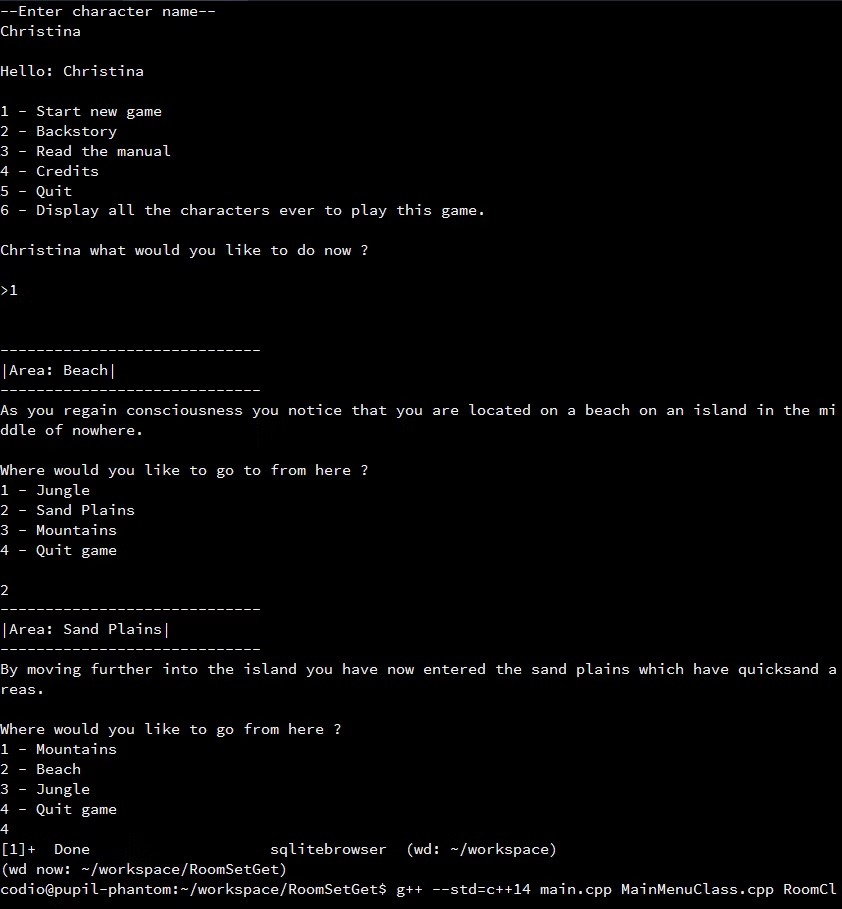
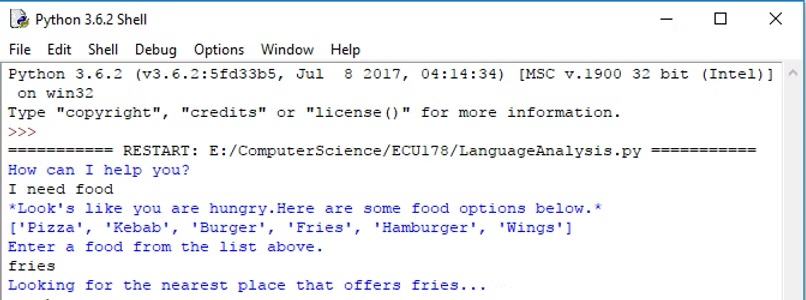
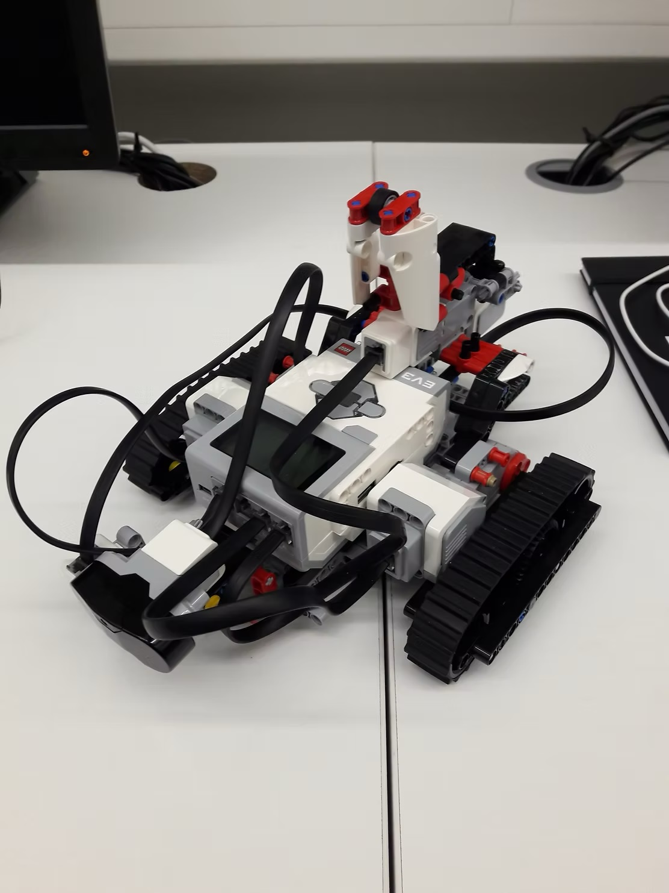

Projects
Measuring Wikipedia Article Quality
Object Detection Performance
Travelling Salesman
Software Enginnering Project
International Collaboration Mobile App
Real World Project - Digital party games
Developing an Old school C++ game

In my second semester at university I joined a new group of colleagues.Amongst ourselves we had to develop a c++ based old school text based games in the next eight weeks.I volunteered to be the team leader and my colleagues agreed wholeheartedly. As a group we used github however we did have some issues when it came to collaborating such as merge conflicts but in the end we managed to mostly solve these issues.
Chatbot project

During my first semester at university our group was to create a chatbot assistant using Python and the theme for our chatbot was "Uni Bot" that helps students who are new to the university to find important places such as buildings and restaurants.I worked on the language analysis section which I found very challenging and interesting.During the development phase of the chatbot I faced many obstacles as I did not have any previous working knowledge of python however I did attend the extra programming sessions and that afforded me the opportunity to complete the project on time and integrate it with my colleagues.It was during this project that I first began using Github as form of version control to store my version of the code online which I found extremely useful since I was constantly having errors with my code and had to create many versions of it.
Lego Mindstorms EV3 Sumo project

My first project at university was to build a robot that would fight in a competition similar to robot wars where one robot must push the opponent out of the ring. My group had a discussion on which robot to build and we decided to build the track3r robot and also add a hammer. We built the robot first and used the EV3 mindstorms environment to build the code later. During the programming stage we faced many obstacles as individuals and had a hard time of putting our code together. I was assigned to work on the infrared sensor and programmed the robot to detect if the enemy robot was in close proximity and if that was true then it would hammer the opponent multiple times.